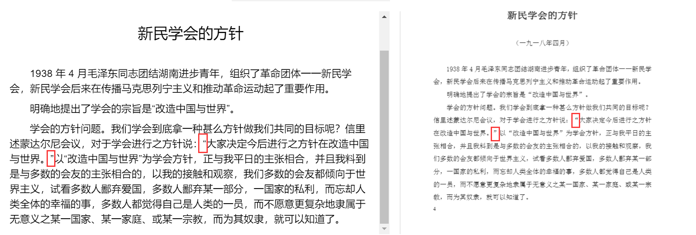

有没有可能将解析的结果分发出来相当于待处理的数据，普通同志校对文字部分，完工之后技术员再上传？
校对这件事有必要而且工作量不小（我这段时间 OCR 文件的经验）
有没有可能将解析的结果分发出来相当于待处理的数据，普通同志校对文字部分，完工之后技术员再上传？
校对这件事有必要而且工作量不小（我这段时间 OCR 文件的经验）
直接改结果可能不行，可以让技术员转换成对应代码，比如第几行的什么字改成什么，发到github issue上面。
那普通同志现阶段帮不上很大忙啊，只能等待后续开发了
应当尽快营造条件让更多同志参与进来，这件事是个不小的工程。恐怕不能仅靠少数技术人员。
我想了一下，可以这么改进，在issue里面按一定规范发贴可以让机器人自动转成代码发出pull request，例如把第33行第一个x换成y，第34行第一个a换成b
标题：修复OCR错误
内容：
操作：替换，文章id：asdf，行数：33，‘x’，‘y’，34，‘a’，‘b’
同志看看这样如何？
好了，可以进行大规模录入了。看样子当前的校对功能普通同志已经可以使用了。
目前需要整理的资料极多，管理员可以先列出一些优先级最高的资料让同志们优先整理。
待会我尝试着对一些文章进行校对，看看实际情况如何。
可以考虑在网站里加个标识提示用户这篇文章有没有被校对过以及校对过多少次。我的看法是每篇机器识别出来的文章都需要人工看过一遍，不论识别的结果错误多不多。
标点问题也需注意，往往是双引号问题。如下：

我准备加个badge 显示校对记录的个数。
这pdf本身就含有可搜索的文本，数据是直接拿过来的，没有经过OCR。标点应该是显示字体不同。
我在 issue 上传了一些图片资料，可以检验一下图片识别的效果了。
多框是正常的，每个框对应一个来源。我想还是跟来源放在一起比较好。
那个毛远新的资料是 prolet github 库里的资料。
其实这种私人拍照的图片你完全可以统一参数直接扫一遍就可以上传了，因为必然要经过人工一张张校对
我目前是想着把上面 mega 网盘弄好的文字成果对应的图片资料先上传，因为之前大家已经 ocr 过一遍了已经形成文字了所以入库会很快（直接复制粘贴）
然后是能搜集到的文字版 pdf，因为文字版书籍没有校对的必要，直接入库也会很快
再是导师选集。
慢慢来吧。
像我上传的那些图片是不是做个二值化再识别效果会更好？我可以直接上传二值化之后的资料
二值化可能可以解决背景不干净的问题，但扭曲的文字还是很难识别（拍摄时纸张卷曲产生的扭曲，不是透视变形）。
{kind=link}